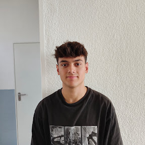

Apasionado por crear videojuegos que enganchen al jugador y transmitan emociones, combinando creatividad y tecnología en experiencias 2D y 3D.
Instituto Tecnológico de Barcelona - 2023/2025
Instituto Bernat el Ferrer - 2025/2026
Me llamo Arnau Molano Rimbau y soy desarrollador de videojuegos especializado en Unity y C#. Disfruto tanto resolviendo problemas técnicos (IA, pathfinding, sistemas procedurales) como pensando en cómo esas decisiones afectan a la experiencia del jugador. He trabajado en proyectos 2D y 3D, solo y en equipo, y me gusta especialmente la fase donde una mecánica abstracta se convierte en algo que se siente bien jugar.
Me adapto rápido a nuevas herramientas y flujos de trabajo, y valoro mucho la comunicación clara cuando colaboro con otras personas en un proyecto, ya sea repartiendo sistemas o integrando código de compañeros.
Mi objetivo a corto plazo es incorporarme como Unity Developer o C# Developer en un estudio o empresa donde pueda seguir creciendo técnicamente, ya sea en programación de gameplay, sistemas de IA, o herramientas internas. Me interesa especialmente profundizar en arquitectura de proyectos a medida que crecen en complejidad, y seguir aprendiendo de desarrolladores con más experiencia.
A medio plazo, quiero ampliar mi perfil hacia áreas como diseño de niveles o sistemas de juego, sin alejarme de la programación, que es donde más disfruto.